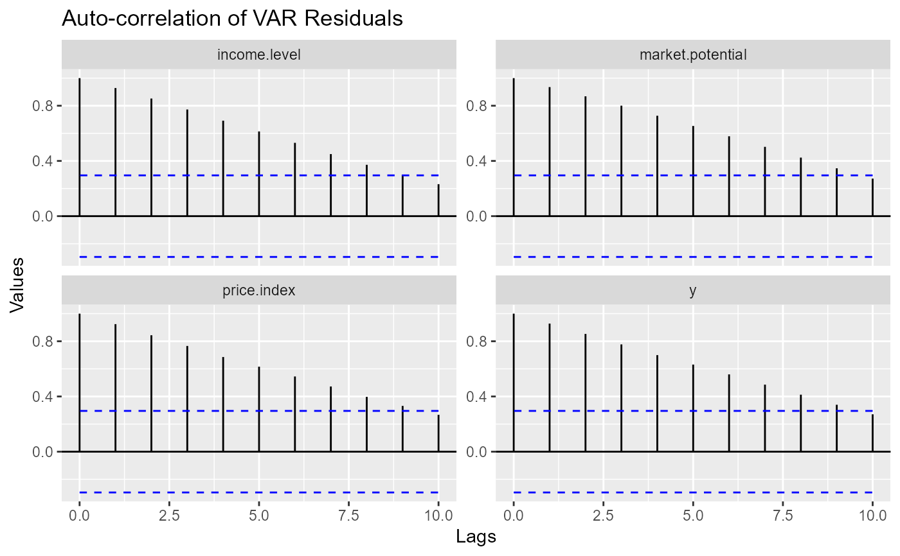

ggvar_acf plots the auto-correlations (and similars) call for every
series, using facet_wrap. ggvar_ccf plots all the
cross-correlations (and similars) between the series, in a grid.
Usage
ggvar_acf(
x,
series = NULL,
lag.max = NULL,
type = "correlation",
graph_type = "segment",
args_geom = list(),
args_ribbon = list(linetype = 2, color = "blue", fill = NA),
args_hline = list(),
args_facet = list(),
ci = 0.95,
...
)
ggvar_ccf(
x,
series = NULL,
lag.max = NULL,
type = "correlation",
graph_type = "segment",
args_geom = list(),
args_ribbon = list(linetype = 2, color = "blue", fill = NA),
args_hline = list(),
args_facet = list(),
facet_type = "ggplot",
ci = 0.95,
...
)Arguments
- x
A dataset (object coercible to data.frame) or a "varest" object to get residuals from.
- series
A character vector with series (column names) to consider. Defaults to all (
NULL).- lag.max
The number of lags used to calculate the ACF, passed to acf.
- type
The type of ACF to be computed. Can be either "correlation", "covariance", or "partial". Passed to acf.
- graph_type
The ggplot geom used to create the plot:
'segment', for ggplot2::geom_segment or'area', for ggplot2::geom_area.- args_geom
Arguments passed to the chosen 'geom'.
- args_ribbon
Additional arguments passed to ggplot2::geom_ribbon.
- args_hline
Additional arguments passed to ggplot2::geom_hline.
- args_facet
Additional arguments passed to the faceting engine used.
- ci
The level of confidence for the ACF confidence interval. Set to
FALSEto omit the geom_ribbon.- ...
Arguments passed to
varr:::setup_acf_setup or varr:::setup_ccf_setup, the generic function that formatsxinto a 'graphable' format. Use them only if you have created a method for some unsupported class ofx.Pass additional arguments to stats::acf here.- facet_type
The facet 'engine' to be used.
'ggplot2'for ggplot2::facet_grid,'ggh4x'for ggh4x::facet_grid2.
Examples
ggvar_acf(freeny[-2], args_facet = list(scales = "free_y"))

ggvar_ccf(freeny[-2], args_facet = list(scales = "free_y"))
#> Error in ggvar_ccf(freeny[-2], args_facet = list(scales = "free_y")): could not find function "ggvar_ccf"
ggvar_acf(vars::VAR(freeny[-2]), args_facet = list(scales = "free_y"))